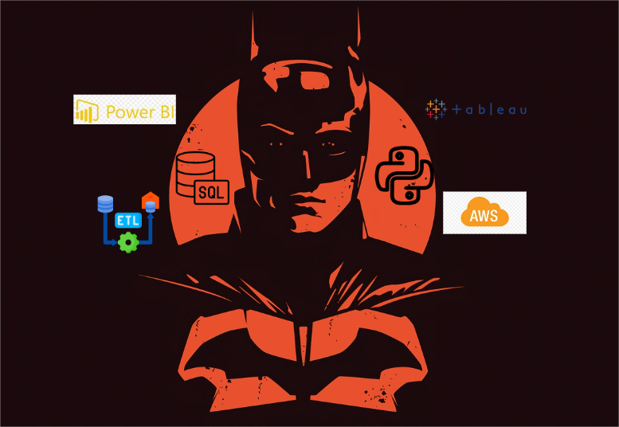

SRJSTREAMS
Srujan Shekar Shetty
Data Analyst | MS- Data Analytics and Management @ Illinois Tech | Python, Machine Learning, Data Mining, SQL, ETL pipelining, AWS, R, Tableau, PowerBI.
Download CVData Analyst & Engineer
I am currently pursuing my MS in Data Analytics and Management at Illinois Institute of Technology. I specialize in transforming complex datasets into actionable insights, and I'm eager to bring innovative solutions to the world of digital assets.

He doesn't write messages on Social networks, send me an email and I'll answer you.
Contact MeSkills


You must defintely visit the project section to checkout the projects developed with these technologies.
RECENT PROJECTS


The project will enhance PM2.5 forecasting through data preprocessing and feature selection, evaluating algorithms like linear regression and decision trees, and assessing reliability with MAE and RMSE metrics. Visualizations will aid stakeholders in understanding air quality trends and health impacts.
SERVICES I OFFER
Python Automation and Bot Creation: Leverage cutting-edge Python tools to automate tasks and develop intelligent bots, streamlining processes for enhanced efficiency.
SQL Database Engineering: Design and implement robust SQL databases tailored to your project's needs, ensuring effective data management and integrity.
Data Analysis and Dashboard Creation: Transform raw data into actionable insights through comprehensive analysis and visually engaging dashboards, empowering informed decision-making.
EXPERIENCE
NETConnect Global
Data Analyst
MAY 2022-JULY 2023Developed a Python Flask web application that utilized GPT-4-32k Azure OpenAI LLM, Langchain, and Chroma-db for interacting with custom PDFs, ITR documents, and SQL databases, significantly improving compliance document analysis. I also built an HR attrition analysis dashboard in Power BI, which helped reduce the attrition rate by 30%, saving the company $20,000 in retention costs. Additionally, I was a part of $143k project that involved web scraping LinkedIn data to provide valuable insights for hiring decisions, ensuring the right candidates were identified for key positions. My automation of NSE/BSE document analysis saved 7,000 hours of manual work, and I developed a Proposal Builder tool that enhanced Google Slide presentations with intuitive templates and real-time collaboration, streamlining the proposal process.
Aspire Tele Solutions
Technical Analyst
SEPT 2021-APRIL 2022Analyzed project data for clients like Ola, identifying trends to improve security services and technical support. Created data-driven reports and visualizations using Excel, Power BI, and SQL. Collaborated with teams to enhance service efficiency and resolve client issues.